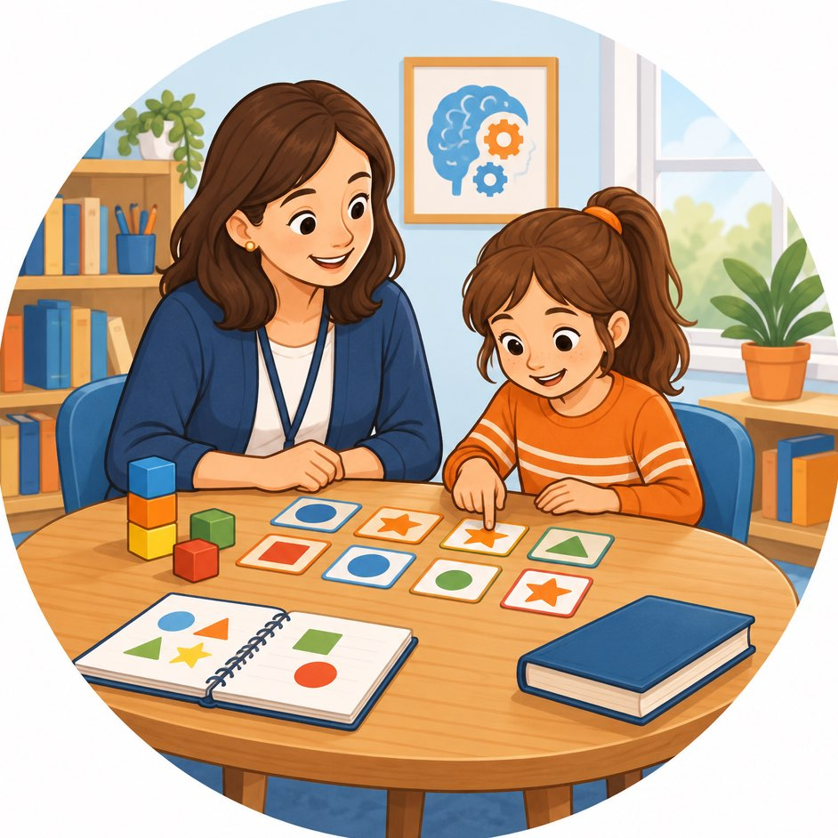

Neuropsicopedagogia | Psicopedagogia | Pedagogia
Jornada Pedagógica Completa, nosso método une a Neuropsicopedagogia Clínica e Reforço Escolar no mesmo lugar.
Uma solução inovadora 360 graus integrando as funções cognitivas como (atenção, memória e foco) junto com ensino conteudista das matérias de Matemática e Português desde a Alfabetização, Fundamental e Médio.
Saber mais pelo WhatsApp
Passo a passo o que fazemos na Atuação Clínica | Técnica
-
Anamnese
Entrevista inicial estruturada e acolhedora com os Pais para compreender o histórico e os desafios a serem superados no desenvolvimento escolar e social
-
Avaliação Neuropsicopedagógica
Mapeamento padronizado das funções executivas, atenção, memória, linguagem, leitura, escrita e raciocínio lógico em crianças e adolescentes
-
Intervenção Especializada
Planos terapêuticos individualizados baseados em evidências científicas para superar dificuldades dos transtornos específicos de aprendizagem
-
Ponte Escola – Consultório
Elaboração de relatórios orientativos e devolutivas periódicas para coordenação e assessoria em estratégias pedagógicas | reforço escolar

Jornada Pedagógica Total
Reforço Escolar Conteudista + Neuropsicopedagogia Clínica Integrados
-
Acolhimento e Escuta
Entrevista profunda e humana com a família para compreender todo o histórico escolar e emocional do aluno.
-
Mapa Cognitivo
Mapeamento padronizado de memória, atenção, leitura e raciocínio lógico do seu filho. Descobrimos a raiz da dificuldade.
-
Destravando o Aprendizado
Criamos planos terapêuticos individuais que são aplicados junto com o reforço de português e matemática para recuperar as notas.
-
Aliança de Sucesso
Alinhamos estratégias pedagógicas e realizamos devolutivas periódicas diretamente para a coordenação do colégio do seu filho.